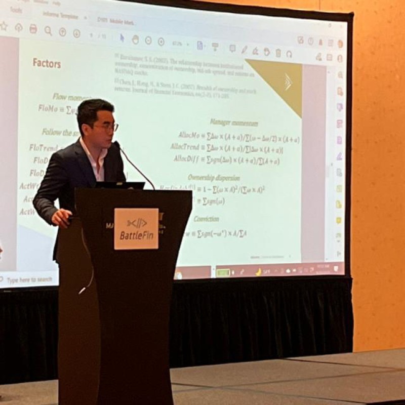

I am a machine learning researcher at Columbia University, where I am supervised by Micah Goldblum and Adam Block. I also conducted course research advised by John Hewitt. My research interests lie in using mathematics to solve AI problems.
Before that, I was a quant and Assistant Vice President at Barclays Capital, where I led research on AI and machine learning for managing multi-billion-dollar portfolios on the trading desk. I was also supervised by Gavin Feng and Hongsong Chou, working on machine learning methods for empirical asset pricing.
My inspiration is Oppenheimer. I am dedicated to research that helps humanity make the transition to sustainable intellectual growth with AI. Minimise regret.